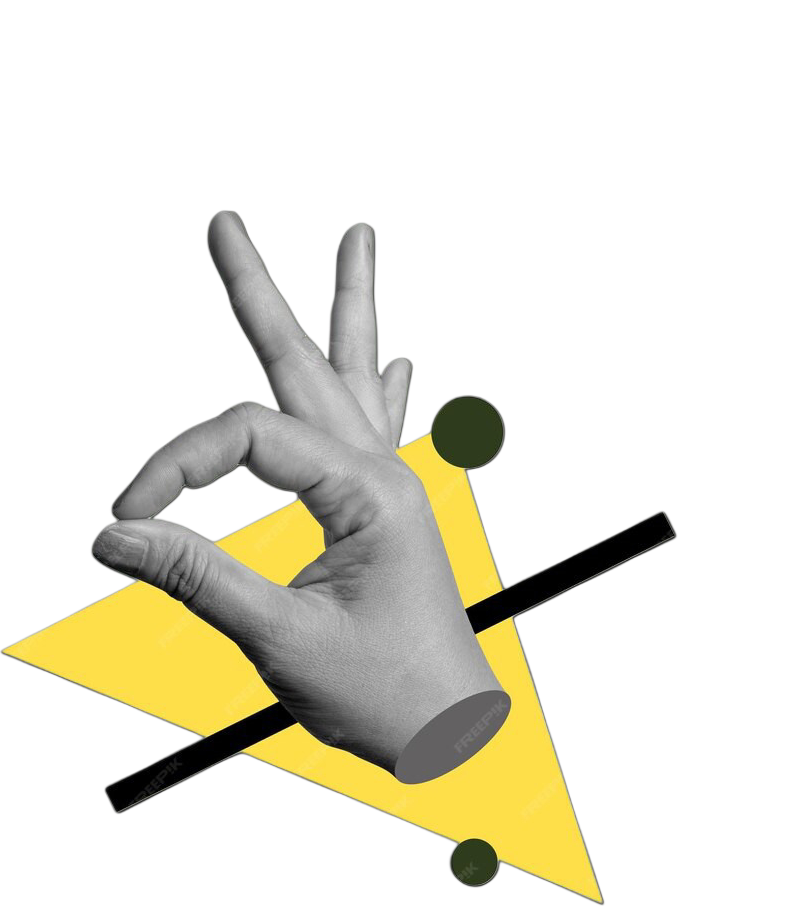

apa itu LangitMalam
pasti anda bertanya soal itu, bukan?
langitMalam downloader adalah situs atau tools untuk mendownload video tiktok tanpa watermark
yang di dalamnya terdapat kunci API pintar,
berkat kunci API pintar proses search dan download video menjadi lebih cepat dengan hasil video yang beresolusi HD .

kelebihan dan kekurangan LangitMalam?
Kelebihan :
-
cara penggunaan yang mudah
-
proses searching cepat
-
hasil download HD
-
bisa untuk download musik dari video
-
aman, secure! Karena langsung dari server tiktok
kekurangan :
- belum support mode desktop
- belum support download foto
- semua kekurangan akan kami perbaiki